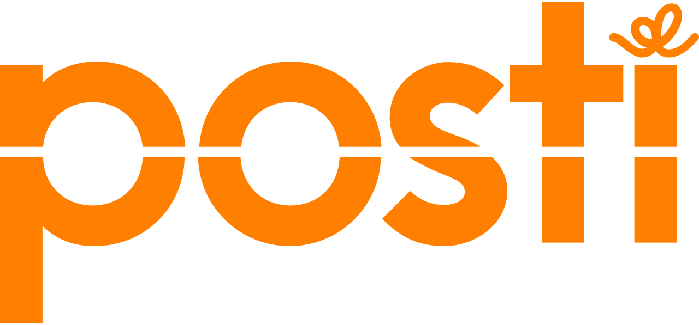
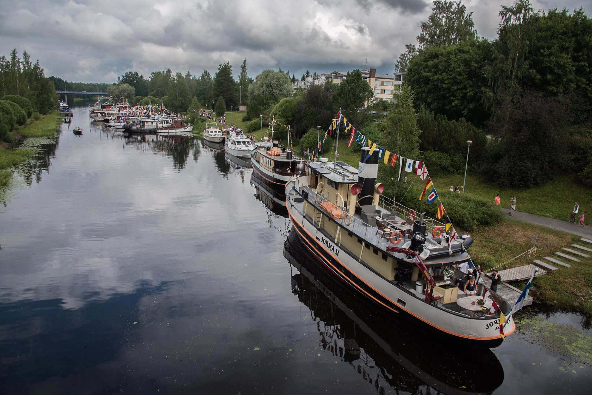
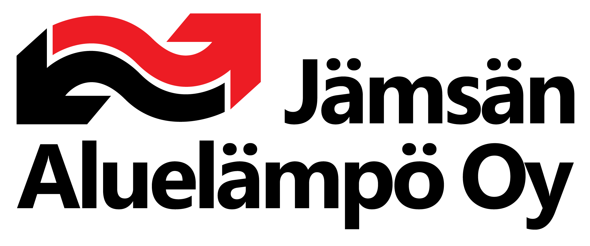

Introduction
Hello and nice to meet you! Pleasure to have you on my resume website. I am a fourth year
International Business -student based in Tampere. After graduation in December of 2021,
my plan is to find a job in the field of finance. On this first tab, you can learn more about my
work experience. There are also two other tabs, dedicated for my education and other qualifications.
On another note, all the pictures seen on this website
are taken by me except company logos. Photography is one of my hobbies that
I am very passionate about.
 September 2020-January 2021
September 2020-January 2021
Finance trainee
Levytyö Särkinen Oy
I did my internship at Levytyö Särkinen Oy as a finance trainee. My key
duties incuded financial management tasks such as invoicing and calculating
employee salaries, updating the company's ISO 9001, 14001 and 45001 standards, company's key figure-
and cost accounting calculations in Excel, and CRM research. During the internship,
I learned to use software applications such as Salesforce, Nestix, C9000 and Procountor.
Overall, the internship was very beneficial for me regarding my future career as
I improved my professional skills massively and the whole experience strenghtened my
view that this is the career path I want to pursue.
December 2017-Present
Ski-shop employee
Hiihtokeskus Himosvuori Oy

During the winter weekends, I'm usually working at Himos Ski Resort's
rental shop. Finding suitable equiment for customers, adjusting ski bindings and
working behind the counter are my main duties during a typical workday. The reason why
I have worked there for so many years is because of the friendly atmosphere amongst coworkers.
As a student, the work also fits my schedule very nicely since I can work over the weekends.
June 2020-August 2020
Groundsman
Himos Golf
During the summer of 2020, I worked as a groundsman for Himos Golf. My tasks
included mowing greens and teeboxes, maintanance of bunkers and picking up
golf balls from driving range. In general, the job was a nice change of pace after
an intense remote study period in the spring because of Covid-19.
December 2019
Christmas assistant
Posti Oy

Right when Christmas was around the corner in 2019, I worked for Posti in the Tampere distribution
center. My position was in the mechanical letter sorting -department where my duty was to input
letters into the machine which sorted them to their corresponding positions.
May 2019-December 2019
Shop assistant
Henkilöstöratkaisu Extraajat Oy

I worked as a cashier and shelver in S-group grocery stores in Tampere and Jämsä regions.
The job made me a lot more flexible as a worker and in life in general since I did not have
any regular working hours or a specific store I would work at. Sometimes the shifts also came
on a very short notice which taught me to always be ready.
July 2018
Social Media Content Creator
City of Jämsä

I visited and photographed different occasions around Jämsä and published
that content to Jämsä's official social media channels. In this job, I could
let my creative and artistic side shine since I was unrestricted with the content I published, as long as
the quality of the post's was good and they came out regurlarly. I tell more about my
photography experience in the "other qualifications" -section of this website!
May 2018-June 2018
Photo- and video editor
Procadme Team Oy
During my time working for Procadme Team Oy, I edited short video clips,
made roll-ups for exhibitions with photoshop, added photos to the SAP system and edited
industrial photos according to blueprints.
August 2017-March 2018
Photographer
Finnish Defence Forces
I completed my military service as a photographer for Lapland's
Military Band. My job was to create marketing material for
different events the band went to, photograph the events themselves
and publish content to the band's social media pages.
April 2017-June 2017
June 2016-July 2016
June 2015
Summer Worker
Jämsän Aluelämpö Oy

My first summer job was at Jämsän Aluelämpö Oy where I worked for three
straight summers. My role was to assist the technicians at the heating plant,
keep the facilities clean and general work at various worksites in Jämsä.